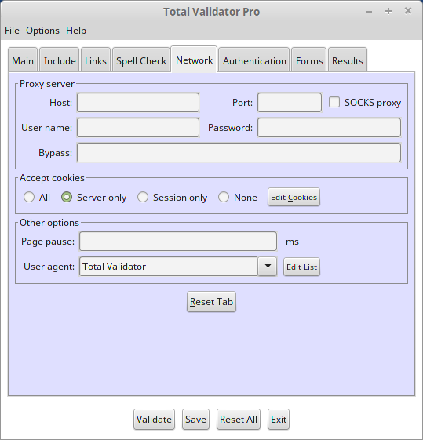

Introduction
All of the options that appear on the Network tab of the Pro tool are described below.

 top
topProxy server
In order to access the Internet, either to validate pages or to check for updates to this tool, your organisation may require you to go through a Proxy Server. If you cannot validate any pages on the Internet, or otherwise believe that you use a Proxy then you must complete this section, and you may have to contact your IT provider or internal IT support function to find out what settings to use here.
If you have selected the Use System proxy menu option the tool will try to use the operating system settings to determine which proxy server to use. But if this doesn't work, or if you simply wish to override these settings, you may supply the details here. You must supply the host name or IP address of the proxy server, optionally a port number (defaults to 8080, or 1080 for SOCKS) and whether it uses SOCKS.
Many proxy servers require you to authenticate yourself, so fields are available to
enter the required user name and password to save typing them in each time.
When connecting to a proxy server using Windows (NTLM) authentication you
may need to supply a domain name. In this case enter the domain name
and user name separated by a backslash into the user name field. For
example MYDOMAIN\myuser.
Note that although the password is masked with asterisks when you type it in, it will still be stored as plain text when you save your workspace. So you may wish to try the interactive option instead. You may also need to use the interactive option if you go through more than one authenticating proxy which requires different, name/password combinations.
Any proxy authentication details you enter using any method will be cached in memory until the tool is restarted to save you having to enter them more than once.
You can also enter a comma-separated list of host names or IP addresses which will bypass the proxy server. Note that this may not always override any system proxy settings that may be used. You may also use a * character as a wildcard at the start or end of each host name or IP address, but not both and you cannot use * on it's own. Also note that "127.0.0.1" and "localhost" are automatically included so you do not have to list them here.
Accept cookies
This tab enables you to specify how cookies will be managed by the tool. You can specify whether you want to accept all cookies including third party cookies (All), only those that refer back to the server that set them (Server only), only session cookies (Session only), or ignore all cookies (None).
Cookies that are accepted will be stored on disk for the next validation. You can see which cookies are currently stored using the 'Edit Cookies' button. A dialog box will appear that allows you to view and delete individual or groups of cookies, or all cookies that are stored. Note that session cookies are displayed here for convenience, but these will not be used when you run a validation.
Page pause
If you wish to minimise the impact of validation requests on your server you can use this option to set the time in milliseconds to pause before retrieving each page. By pausing in this way the rate of requests hitting the server will be reduced. Normally this option is used together with the Link pause option.
When validating the source, or DOM-generated source, of multiple pages using a browser extension, the pause you specify here will occur after each page is loaded rather than before. This is so that this pause may be used to ensure that all the javascript on the page has loaded and executed before validating the DOM-generated source.
User agent
When validating a website the tool identifies itself as 'TotalValidator/6.0' by default. If you wish the tool to identify itself as another user agent, then select the required identity from the drop down list.
You can amend the list of identities and what they mean using the 'Edit List' button. This will display a dialog box for easy editing of the list of user agents and the corresponding text sent to the web server when the tool accesses it. You can generally find the user agent strings used by your website visitors by viewing your web logs. There are also online resources such as http://www.useragentstring.com
If you wish to return to the default list of identities then use the 'Reset' button provided on the edit screen. This also allows you to update the list with the identities provided in the most recent version following an upgrade.